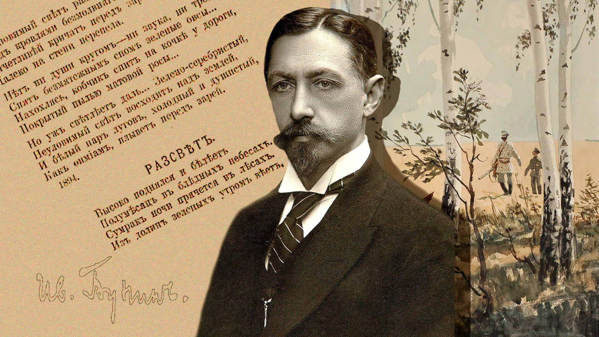

<!DOCTYPE html>
<html xmlns="http://www.w3.org/1999/xhtml" lang="en" xml:lang="en"><head>

<meta charset="utf-8">
<meta name="generator" content="quarto-1.7.32">

<meta name="viewport" content="width=device-width, initial-scale=1.0, user-scalable=yes">

<meta name="dcterms.date" content="2022-03-06">

<title> Russia - Ivan Bunin – Literary Jukebox: Design Thinking from Short Fiction</title>
<style>
code{white-space: pre-wrap;}
span.smallcaps{font-variant: small-caps;}
div.columns{display: flex; gap: min(4vw, 1.5em);}
div.column{flex: auto; overflow-x: auto;}
div.hanging-indent{margin-left: 1.5em; text-indent: -1.5em;}
ul.task-list{list-style: none;}
ul.task-list li input[type="checkbox"] {
  width: 0.8em;
  margin: 0 0.8em 0.2em -1em; /* quarto-specific, see https://github.com/quarto-dev/quarto-cli/issues/4556 */ 
  vertical-align: middle;
}
</style>


<script src="../../../../../site_libs/quarto-nav/quarto-nav.js"></script>
<script src="../../../../../site_libs/quarto-nav/headroom.min.js"></script>
<script src="../../../../../site_libs/clipboard/clipboard.min.js"></script>
<script src="../../../../../site_libs/quarto-search/autocomplete.umd.js"></script>
<script src="../../../../../site_libs/quarto-search/fuse.min.js"></script>
<script src="../../../../../site_libs/quarto-search/quarto-search.js"></script>
<meta name="quarto:offset" content="../../../../../">
<link href="../../../../../content/courses/ISTW/Modules/100-Czechia-MilanKundera/index.html" rel="next">
<link href="../../../../../content/courses/ISTW/Modules/80-England-VSPritchett/index.html" rel="prev">
<link href="../../../../../content/materials/icon-park-twotone--concept-sharing.svg" rel="icon" type="image/svg+xml">
<script src="../../../../../site_libs/quarto-html/quarto.js" type="module"></script>
<script src="../../../../../site_libs/quarto-html/tabsets/tabsets.js" type="module"></script>
<script src="../../../../../site_libs/quarto-html/popper.min.js"></script>
<script src="../../../../../site_libs/quarto-html/tippy.umd.min.js"></script>
<script src="../../../../../site_libs/quarto-html/anchor.min.js"></script>
<link href="../../../../../site_libs/quarto-html/tippy.css" rel="stylesheet">
<link href="../../../../../site_libs/quarto-html/quarto-syntax-highlighting-37eea08aefeeee20ff55810ff984fec1.css" rel="stylesheet" id="quarto-text-highlighting-styles">
<script src="../../../../../site_libs/bootstrap/bootstrap.min.js"></script>
<link href="../../../../../site_libs/bootstrap/bootstrap-icons.css" rel="stylesheet">
<link href="../../../../../site_libs/bootstrap/bootstrap-edc95416861045c4ef34ba025884b500.min.css" rel="stylesheet" append-hash="true" id="quarto-bootstrap" data-mode="light">
<link href="../../../../../site_libs/quarto-contrib/line-highlight-1.0.0/line-highlight.css" rel="stylesheet">
<script src="../../../../../site_libs/quarto-contrib/iconify-2.1.0/iconify-icon.min.js"></script>
<script src="../../../../../site_libs/quarto-contrib/glightbox/glightbox.min.js"></script>
<link href="../../../../../site_libs/quarto-contrib/glightbox/glightbox.min.css" rel="stylesheet">
<link href="../../../../../site_libs/quarto-contrib/glightbox/lightbox.css" rel="stylesheet">
<link href="../../../../../site_libs/quarto-contrib/tachyons-4.12.0/tachyons.css" rel="stylesheet">
<script id="quarto-search-options" type="application/json">{
  "location": "navbar",
  "copy-button": false,
  "collapse-after": 3,
  "panel-placement": "end",
  "type": "overlay",
  "limit": 50,
  "keyboard-shortcut": [
    "f",
    "/",
    "s"
  ],
  "show-item-context": false,
  "language": {
    "search-no-results-text": "No results",
    "search-matching-documents-text": "matching documents",
    "search-copy-link-title": "Copy link to search",
    "search-hide-matches-text": "Hide additional matches",
    "search-more-match-text": "more match in this document",
    "search-more-matches-text": "more matches in this document",
    "search-clear-button-title": "Clear",
    "search-text-placeholder": "",
    "search-detached-cancel-button-title": "Cancel",
    "search-submit-button-title": "Submit",
    "search-label": "Search"
  }
}</script>
<style>html{ scroll-behavior: smooth; }</style>
<link href="../../../../../site_libs/htmltools-fill-0.5.8.1/fill.css" rel="stylesheet">
<script src="../../../../../site_libs/htmlwidgets-1.6.4/htmlwidgets.js"></script>
<script src="../../../../../site_libs/jquery-3.6.0/jquery-3.6.0.min.js"></script>
<link href="../../../../../site_libs/leaflet-1.3.1/leaflet.css" rel="stylesheet">
<script src="../../../../../site_libs/leaflet-1.3.1/leaflet.js"></script>
<link href="../../../../../site_libs/leafletfix-1.0.0/leafletfix.css" rel="stylesheet">
<script src="../../../../../site_libs/proj4-2.6.2/proj4.min.js"></script>
<script src="../../../../../site_libs/Proj4Leaflet-1.0.1/proj4leaflet.js"></script>
<link href="../../../../../site_libs/rstudio_leaflet-1.3.1/rstudio_leaflet.css" rel="stylesheet">
<script src="../../../../../site_libs/leaflet-binding-2.2.2/leaflet.js"></script>
<script src="../../../../../site_libs/leaflet-providers-2.0.0/leaflet-providers_2.0.0.js"></script>
<script src="../../../../../site_libs/leaflet-providers-plugin-2.2.2/leaflet-providers-plugin.js"></script>
<link href="../../../../../site_libs/leaflet-easybutton-1.3.1/easy-button.css" rel="stylesheet">
<script src="../../../../../site_libs/leaflet-easybutton-1.3.1/easy-button.js"></script>
<script src="../../../../../site_libs/leaflet-easybutton-1.3.1/EasyButton-binding.js"></script>
<link href="../../../../../site_libs/ionicons-2.0.1/ionicons.min.css" rel="stylesheet">
<link href="../../../../../site_libs/leaflet-minimap-3.3.1/Control.MiniMap.min.css" rel="stylesheet">
<script src="../../../../../site_libs/leaflet-minimap-3.3.1/Control.MiniMap.min.js"></script>
<script src="../../../../../site_libs/leaflet-minimap-3.3.1/Minimap-binding.js"></script>
<link href="../../../../../site_libs/leaflet-measure-2.1.7/leaflet-measure.css" rel="stylesheet">
<script src="../../../../../site_libs/leaflet-measure-2.1.7/leaflet-measure.min.js"></script>


<meta property="og:title" content=" Russia - Ivan Bunin – Literary Jukebox: Design Thinking from Short Fiction">
<meta property="og:description" content="Sunstroke">
<meta property="og:image" content="https://literary-jukebox.netlify.app/content/courses/ISTW/Modules/90-Russia-IvanBunin/bunin.jpg">
<meta property="og:site_name" content="Literary Jukebox: Design Thinking from Short Fiction">
<meta name="twitter:title" content=" Russia - Ivan Bunin – Literary Jukebox: Design Thinking from Short Fiction">
<meta name="twitter:description" content="Sunstroke">
<meta name="twitter:image" content="https://literary-jukebox.netlify.app/content/courses/ISTW/Modules/90-Russia-IvanBunin/bunin.jpg">
<meta name="twitter:card" content="summary_large_image">
</head>

<body class="nav-sidebar docked nav-fixed quarto-light">

<div id="quarto-search-results"></div>
  <header id="quarto-header" class="headroom fixed-top">
    <nav class="navbar navbar-expand-lg " data-bs-theme="dark">
      <div class="navbar-container container-fluid">
      <div class="navbar-brand-container mx-auto">
    <a class="navbar-brand" href="../../../../../index.html">
    <span class="navbar-title">Literary Jukebox: Design Thinking from Short Fiction</span>
    </a>
  </div>
            <div id="quarto-search" class="" title="Search"></div>
          <button class="navbar-toggler" type="button" data-bs-toggle="collapse" data-bs-target="#navbarCollapse" aria-controls="navbarCollapse" role="menu" aria-expanded="false" aria-label="Toggle navigation" onclick="if (window.quartoToggleHeadroom) { window.quartoToggleHeadroom(); }">
  <span class="navbar-toggler-icon"></span>
</button>
          <div class="collapse navbar-collapse" id="navbarCollapse">
            <ul class="navbar-nav navbar-nav-scroll ms-auto">
  <li class="nav-item compact">
    <a class="nav-link" href="https://github.com/arvindvenkatadri/literary-jukebox"> <i class="bi bi-github" role="img">
</i> 
<span class="menu-text"></span></a>
  </li>  
  <li class="nav-item compact">
    <a class="nav-link" href="https://twitter.com/arvind_v"> <i class="bi bi-twitter" role="img">
</i> 
<span class="menu-text"></span></a>
  </li>  
  <li class="nav-item compact">
    <a class="nav-link" href="https://www.linkedin.com/in/arvindvenkatadri"> <i class="bi bi-linkedin" role="img">
</i> 
<span class="menu-text"></span></a>
  </li>  
  <li class="nav-item compact">
    <a class="nav-link" href="mailto:arvind.venkatadri@gmail.com"> <i class="bi bi-envelope" role="img">
</i> 
<span class="menu-text"></span></a>
  </li>  
</ul>
          </div> <!-- /navcollapse -->
            <div class="quarto-navbar-tools">
  <a href="" class="quarto-reader-toggle quarto-navigation-tool px-1" onclick="window.quartoToggleReader(); return false;" title="Toggle reader mode">
  <div class="quarto-reader-toggle-btn">
  <i class="bi"></i>
  </div>
</a>
</div>
      </div> <!-- /container-fluid -->
    </nav>
  <nav class="quarto-secondary-nav">
    <div class="container-fluid d-flex">
      <button type="button" class="quarto-btn-toggle btn" data-bs-toggle="collapse" role="button" data-bs-target=".quarto-sidebar-collapse-item" aria-controls="quarto-sidebar" aria-expanded="false" aria-label="Toggle sidebar navigation" onclick="if (window.quartoToggleHeadroom) { window.quartoToggleHeadroom(); }">
        <i class="bi bi-layout-text-sidebar-reverse"></i>
      </button>
        <nav class="quarto-page-breadcrumbs" aria-label="breadcrumb"><ol class="breadcrumb"><li class="breadcrumb-item"><a href="../../../../../content/courses/ISTW/listing.html">Literary Jukebox: In Short, the World</a></li><li class="breadcrumb-item"><a href="../../../../../content/courses/ISTW/Modules/90-Russia-IvanBunin/index.html"><iconify-icon icon="streamline-emojis:russia"></iconify-icon> Russia - Ivan Bunin</a></li></ol></nav>
        <a class="flex-grow-1" role="navigation" data-bs-toggle="collapse" data-bs-target=".quarto-sidebar-collapse-item" aria-controls="quarto-sidebar" aria-expanded="false" aria-label="Toggle sidebar navigation" onclick="if (window.quartoToggleHeadroom) { window.quartoToggleHeadroom(); }">      
        </a>
      <button type="button" class="btn quarto-search-button" aria-label="Search" onclick="window.quartoOpenSearch();">
        <i class="bi bi-search"></i>
      </button>
    </div>
  </nav>
</header>
<!-- content -->
<div id="quarto-content" class="quarto-container page-columns page-rows-contents page-layout-full page-navbar">
<!-- sidebar -->
  <nav id="quarto-sidebar" class="sidebar collapse collapse-horizontal quarto-sidebar-collapse-item sidebar-navigation docked overflow-auto">
    <div class="pt-lg-2 mt-2 text-left sidebar-header">
      <a href="../../../../../index.html" class="sidebar-logo-link">
      
      </a>
      </div>
        <div class="mt-2 flex-shrink-0 align-items-center">
        <div class="sidebar-search">
        <div id="quarto-search" class="" title="Search"></div>
        </div>
        </div>
    <div class="sidebar-menu-container"> 
    <ul class="list-unstyled mt-1">
        <li class="sidebar-item sidebar-item-section">
      <div class="sidebar-item-container"> 
            <a href="../../../../../content/courses/ISTW/listing.html" class="sidebar-item-text sidebar-link">
 <span class="menu-text">Literary Jukebox: In Short, the World</span></a>
          <a class="sidebar-item-toggle text-start" data-bs-toggle="collapse" data-bs-target="#quarto-sidebar-section-1" role="navigation" aria-expanded="true" aria-label="Toggle section">
            <i class="bi bi-chevron-right ms-2"></i>
          </a> 
      </div>
      <ul id="quarto-sidebar-section-1" class="collapse list-unstyled sidebar-section depth1 show">  
          <li class="sidebar-item">
  <div class="sidebar-item-container"> 
  <a href="../../../../../content/courses/ISTW/Modules/10-Italy-DinoBuzatti/index.html" class="sidebar-item-text sidebar-link">
 <span class="menu-text"><iconify-icon icon="streamline-emojis:italy"></iconify-icon> Italy - Dino Buzzati</span></a>
  </div>
</li>
          <li class="sidebar-item">
  <div class="sidebar-item-container"> 
  <a href="../../../../../content/courses/ISTW/Modules/20-France-GuydeMaupassant/index.html" class="sidebar-item-text sidebar-link">
 <span class="menu-text"><iconify-icon icon="streamline-emojis:france"></iconify-icon> France - Guy de Maupassant</span></a>
  </div>
</li>
          <li class="sidebar-item">
  <div class="sidebar-item-container"> 
  <a href="../../../../../content/courses/ISTW/Modules/30-Japan-HisayeYamamoto/index.html" class="sidebar-item-text sidebar-link">
 <span class="menu-text"><iconify-icon icon="streamline-emojis:japan"></iconify-icon>Japan - Hisaye Yamamoto</span></a>
  </div>
</li>
          <li class="sidebar-item">
  <div class="sidebar-item-container"> 
  <a href="../../../../../content/courses/ISTW/Modules/40-Peru-VGCalderon/index.html" class="sidebar-item-text sidebar-link">
 <span class="menu-text"><iconify-icon icon="openmoji:flag-peru"></iconify-icon> Peru - Ventura Garcia Calderon</span></a>
  </div>
</li>
          <li class="sidebar-item">
  <div class="sidebar-item-container"> 
  <a href="../../../../../content/courses/ISTW/Modules/50-Russia-MaximGorky/index.html" class="sidebar-item-text sidebar-link">
 <span class="menu-text"><iconify-icon icon="streamline-emojis:russia"></iconify-icon> Russia - Maxim Gorky</span></a>
  </div>
</li>
          <li class="sidebar-item">
  <div class="sidebar-item-container"> 
  <a href="../../../../../content/courses/ISTW/Modules/60-Egypt-AlifaRifaat/index.html" class="sidebar-item-text sidebar-link">
 <span class="menu-text"><iconify-icon icon="streamline-emojis:egypt"></iconify-icon> Egypt - Alifa Rifaat</span></a>
  </div>
</li>
          <li class="sidebar-item">
  <div class="sidebar-item-container"> 
  <a href="../../../../../content/courses/ISTW/Modules/70-Brazil-ClariceLispector/index.html" class="sidebar-item-text sidebar-link">
 <span class="menu-text"><iconify-icon icon="streamline-emojis:brazil"></iconify-icon> Brazil - Clarice Lispector</span></a>
  </div>
</li>
          <li class="sidebar-item">
  <div class="sidebar-item-container"> 
  <a href="../../../../../content/courses/ISTW/Modules/80-England-VSPritchett/index.html" class="sidebar-item-text sidebar-link">
 <span class="menu-text"><iconify-icon icon="streamline-emojis:united-kingdom"></iconify-icon> England - V S Pritchett</span></a>
  </div>
</li>
          <li class="sidebar-item">
  <div class="sidebar-item-container"> 
  <a href="../../../../../content/courses/ISTW/Modules/90-Russia-IvanBunin/index.html" class="sidebar-item-text sidebar-link active">
 <span class="menu-text"><iconify-icon icon="streamline-emojis:russia"></iconify-icon> Russia - Ivan Bunin</span></a>
  </div>
</li>
          <li class="sidebar-item">
  <div class="sidebar-item-container"> 
  <a href="../../../../../content/courses/ISTW/Modules/100-Czechia-MilanKundera/index.html" class="sidebar-item-text sidebar-link">
 <span class="menu-text"><iconify-icon icon="emojione-v1:flag-for-czechia"></iconify-icon> Czechia - Milan Kundera</span></a>
  </div>
</li>
          <li class="sidebar-item">
  <div class="sidebar-item-container"> 
  <a href="../../../../../content/courses/ISTW/Modules/120-Sweden-LarsGustaffson/index.html" class="sidebar-item-text sidebar-link">
 <span class="menu-text"><iconify-icon icon="emojione-v1:flag-for-sweden"></iconify-icon> Sweden - Lars Gustaffsson</span></a>
  </div>
</li>
          <li class="sidebar-item">
  <div class="sidebar-item-container"> 
  <a href="../../../../../content/courses/ISTW/Modules/140-Canada-JohnCheever/index.html" class="sidebar-item-text sidebar-link">
 <span class="menu-text"><iconify-icon icon="streamline-emojis:canada"></iconify-icon> Canada - John Cheever</span></a>
  </div>
</li>
          <li class="sidebar-item">
  <div class="sidebar-item-container"> 
  <a href="../../../../../content/courses/ISTW/Modules/150-Ireland-WilliamTrevor/index.html" class="sidebar-item-text sidebar-link">
 <span class="menu-text"><iconify-icon icon="twemoji:flag-ireland"></iconify-icon> Ireland - William Trevor</span></a>
  </div>
</li>
          <li class="sidebar-item">
  <div class="sidebar-item-container"> 
  <a href="../../../../../content/courses/ISTW/Modules/160-USA-RaymondCarver/index.html" class="sidebar-item-text sidebar-link">
 <span class="menu-text"><iconify-icon icon="streamline-emojis:united-states"></iconify-icon> USA - Raymond Carver</span></a>
  </div>
</li>
          <li class="sidebar-item">
  <div class="sidebar-item-container"> 
  <a href="../../../../../content/courses/ISTW/Modules/170-Italy-PrimoLevi/index.html" class="sidebar-item-text sidebar-link">
 <span class="menu-text"><iconify-icon icon="streamline-emojis:italy"></iconify-icon> Italy - Primo Levi</span></a>
  </div>
</li>
          <li class="sidebar-item">
  <div class="sidebar-item-container"> 
  <a href="../../../../../content/courses/ISTW/Modules/180-India-RuthPrawerJhabvala/index.html" class="sidebar-item-text sidebar-link">
 <span class="menu-text"><iconify-icon icon="streamline-emojis:india"></iconify-icon> India - Ruth Prawer Jhabvala</span></a>
  </div>
</li>
          <li class="sidebar-item">
  <div class="sidebar-item-container"> 
  <a href="../../../../../content/courses/ISTW/Modules/190-USA-CarsonMcCullers/index.html" class="sidebar-item-text sidebar-link">
 <span class="menu-text"><iconify-icon icon="streamline-emojis:united-states"></iconify-icon> USA - Carson McCullers</span></a>
  </div>
</li>
          <li class="sidebar-item">
  <div class="sidebar-item-container"> 
  <a href="../../../../../content/courses/ISTW/Modules/200-Zimbabwe-PetinaGappah/index.html" class="sidebar-item-text sidebar-link">
 <span class="menu-text"><iconify-icon icon="twemoji:flag-zimbabwe"></iconify-icon> Zimbabwe - Petina Gappah</span></a>
  </div>
</li>
          <li class="sidebar-item">
  <div class="sidebar-item-container"> 
  <a href="../../../../../content/courses/ISTW/Modules/220-India-BharatiMukherjee/index.html" class="sidebar-item-text sidebar-link">
 <span class="menu-text"><iconify-icon icon="streamline-emojis:india"></iconify-icon> India - Bharati Mukherjee</span></a>
  </div>
</li>
          <li class="sidebar-item">
  <div class="sidebar-item-container"> 
  <a href="../../../../../content/courses/ISTW/Modules/230-USA-Lucia-Berlin/index.html" class="sidebar-item-text sidebar-link">
 <span class="menu-text"><iconify-icon icon="streamline-emojis:united-states"></iconify-icon> USA - Lucia Berlin</span></a>
  </div>
</li>
          <li class="sidebar-item">
  <div class="sidebar-item-container"> 
  <a href="../../../../../content/courses/ISTW/Modules/240-USA-GracePaley/index.html" class="sidebar-item-text sidebar-link">
 <span class="menu-text"><iconify-icon icon="streamline-emojis:united-states"></iconify-icon> USA - Grace Paley</span></a>
  </div>
</li>
          <li class="sidebar-item">
  <div class="sidebar-item-container"> 
  <a href="../../../../../content/courses/ISTW/Modules/250-England-AngelaCarter/index.html" class="sidebar-item-text sidebar-link">
 <span class="menu-text"><iconify-icon icon="streamline-emojis:united-kingdom"></iconify-icon> England - Angela Carter</span></a>
  </div>
</li>
          <li class="sidebar-item">
  <div class="sidebar-item-container"> 
  <a href="../../../../../content/courses/ISTW/Modules/260-USA-KurtVonnegut/index.html" class="sidebar-item-text sidebar-link">
 <span class="menu-text"><iconify-icon icon="streamline-emojis:united-states"></iconify-icon> USA - Kurt Vonnegut</span></a>
  </div>
</li>
          <li class="sidebar-item">
  <div class="sidebar-item-container"> 
  <a href="../../../../../content/courses/ISTW/Modules/270-Spain-MerceRodoreda/index.html" class="sidebar-item-text sidebar-link">
 <span class="menu-text"><iconify-icon icon="streamline-emojis:spain"></iconify-icon> Spain-Merce Rodoreda</span></a>
  </div>
</li>
          <li class="sidebar-item">
  <div class="sidebar-item-container"> 
  <a href="../../../../../content/courses/ISTW/Modules/280-Israel-RuthCalderon/index.html" class="sidebar-item-text sidebar-link">
 <span class="menu-text"><iconify-icon icon="emojione-v1:flag-for-israel"></iconify-icon> Israel - Ruth Calderon</span></a>
  </div>
</li>
          <li class="sidebar-item">
  <div class="sidebar-item-container"> 
  <a href="../../../../../content/courses/ISTW/Modules/290-Israel-EtgarKeret/index.html" class="sidebar-item-text sidebar-link">
 <span class="menu-text"><iconify-icon icon="emojione-v1:flag-for-israel"></iconify-icon> Israel - Etgar Keret</span></a>
  </div>
</li>
      </ul>
  </li>
    </ul>
    </div>
</nav>
<div id="quarto-sidebar-glass" class="quarto-sidebar-collapse-item" data-bs-toggle="collapse" data-bs-target=".quarto-sidebar-collapse-item"></div>
<!-- margin-sidebar -->
    <div id="quarto-margin-sidebar" class="sidebar margin-sidebar">
        <nav id="TOC" role="doc-toc" class="toc-active">
    <h2 id="toc-title">On this page</h2>
   
  <ul>
  <li><a href="#ivan-bunin" id="toc-ivan-bunin" class="nav-link active" data-scroll-target="#ivan-bunin">Ivan Bunin</a>
  <ul class="collapse">
  <li><a href="#story" id="toc-story" class="nav-link" data-scroll-target="#story">Story</a></li>
  <li><a href="#themes" id="toc-themes" class="nav-link" data-scroll-target="#themes">Themes</a></li>
  <li><a href="#additional-material" id="toc-additional-material" class="nav-link" data-scroll-target="#additional-material">Additional Material</a></li>
  </ul></li>
  <li><a href="#notes-and-references" id="toc-notes-and-references" class="nav-link" data-scroll-target="#notes-and-references">Notes and References</a>
  <ul class="collapse">
  <li><a href="#songs-for-the-story" id="toc-songs-for-the-story" class="nav-link" data-scroll-target="#songs-for-the-story">Songs for the Story !!</a></li>
  </ul></li>
  <li><a href="#writing-prompts" id="toc-writing-prompts" class="nav-link" data-scroll-target="#writing-prompts">Writing Prompts</a></li>
  </ul>
</nav>
    </div>
<!-- main -->
<main class="content column-body" id="quarto-document-content">

<header id="title-block-header" class="quarto-title-block default"><nav class="quarto-page-breadcrumbs quarto-title-breadcrumbs d-none d-lg-block" aria-label="breadcrumb"><ol class="breadcrumb"><li class="breadcrumb-item"><a href="../../../../../content/courses/ISTW/listing.html">Literary Jukebox: In Short, the World</a></li><li class="breadcrumb-item"><a href="../../../../../content/courses/ISTW/Modules/90-Russia-IvanBunin/index.html"><iconify-icon icon="streamline-emojis:russia"></iconify-icon> Russia - Ivan Bunin</a></li></ol></nav>
<div class="quarto-title">
<h1 class="title"><iconify-icon icon="streamline-emojis:russia"></iconify-icon> Russia - Ivan Bunin</h1>
<p class="subtitle lead">Sunstroke</p>
</div>


<div class="quarto-title-meta column-body">

    
    <div>
    <div class="quarto-title-meta-heading">Published</div>
    <div class="quarto-title-meta-contents">
      <p class="date">March 6, 2022</p>
    </div>
  </div>
  
    
  </div>
  


</header>


<section id="ivan-bunin" class="level2">
<h2 class="anchored" data-anchor-id="ivan-bunin">Ivan Bunin</h2>
<p><a href="bunin.jpg" class="lightbox" data-gallery="quarto-lightbox-gallery-1"></a></p>
<blockquote class="blockquote">
<p>IVAN BUNIN, the first Russian writer to win the Nobel Prize (1931), was born in 1870 to an aristocratic family in Vorornezh. After attending the University of Moscow briefly, he brought out his first book, a volume of verse. For this and his realistic accounts of the decay of the Russian nobility, he was awarded the Pushkin Prize for Literature and elected to the Russian Academy. He fled to western Europe, following the Revolution, and lived mainly in Paris, sometimes nearly destitute, until his death at the age of eightythree. His study of the dying patriarchy among Russian peasants raises him into the front rank of European novelists, but his present reputation rests on his short stories, in such collections as <em>The Gentleman from San Francisco</em> and <em>The Grammar of Love</em>. In many of his stories he contrasts the transitoriness of human life with the endurance of beauty and nature. Somerset Maugham has called “Sunstroke” one of the world’s best stories.</p>
</blockquote>
<section id="story" class="level3">
<h3 class="anchored" data-anchor-id="story">Story</h3>
<p>We will read Ivan Bunin’s short story, <u><a href="../../../../../pdf/ISTW/IvanBunin-Sunstroke.pdf"><strong>Sunstroke</strong></a></u></p>
</section>
<section id="themes" class="level3">
<h3 class="anchored" data-anchor-id="themes">Themes</h3>
<ul>
<li>First Love</li>
<li>Shipboard Romances ( cliche )</li>
<li>Time and Memory, Senses</li>
<li>“River of Life” situation</li>
<li>One Night Stands?</li>
<li>Adultery: Bad for Life but good for Literature?</li>
<li>Men Don’t Cry?</li>
</ul>
</section>
<section id="additional-material" class="level3">
<h3 class="anchored" data-anchor-id="additional-material">Additional Material</h3>
<p>The Map of the Story</p>
<div class="cell">
<div class="cell-output-display">
<div class="leaflet html-widget html-fill-item" id="htmlwidget-e045f9a26492705fbed2" style="width:100%;height:464px;"></div>
<script type="application/json" data-for="htmlwidget-e045f9a26492705fbed2">{"x":{"options":{"crs":{"crsClass":"L.CRS.EPSG3857","code":null,"proj4def":null,"projectedBounds":null,"options":{}}},"calls":[{"method":"addProviderTiles","args":["Esri.NatGeoWorldMap",null,"Nat Geo World Map",{"errorTileUrl":"","noWrap":false,"detectRetina":false}]},{"method":"addProviderTiles","args":["Esri.WorldImagery",null,"ESRI World Imagery",{"errorTileUrl":"","noWrap":false,"detectRetina":false}]},{"method":"addProviderTiles","args":["Esri.OceanBasemap",null,"ESRI Ocean Basemap",{"errorTileUrl":"","noWrap":false,"detectRetina":false}]},{"method":"addLayersControl","args":[["Nat Geo World Map","ESRI World Imagery","ESRI Ocean Basemap"],[],{"collapsed":false,"autoZIndex":true,"position":"topright"}]},{"method":"addCircleMarkers","args":[[45.36,55.75,46.47,53.2,48.71,44.97284609498404,44.70545185801301],[36.48,37.62,30.73,50.15,44.48,37.32939127799273,33.57323774328175],2,null,null,{"interactive":true,"className":"","stroke":true,"color":"red","weight":5,"opacity":1,"fill":true,"fillColor":"red","fillOpacity":0.2},null,null,null,null,null,{"interactive":false,"permanent":false,"direction":"auto","opacity":1,"offset":[0,0],"textsize":"10px","textOnly":false,"className":"","sticky":true},null]},{"method":"addPolylines","args":[[[[{"lng":[30.508,30.478,30.479,30.515],"lat":[51.217,50.904,50.749,50.597]}]],[[{"lng":[33.194,32.884,32.603,31.886],"lat":[49.094,49.225,49.302,49.555]}]],[[{"lng":[31.44,31.48,31.486,31.467],"lat":[50,49.933,49.871,49.754]}]],[[{"lng":[33.54,33.606,33.662,33.739,33.859,33.976,33.998,34.155,34.448,34.712,34.946,35.088,35.138,35.149,35.106],"lat":[46.831,46.869,46.957,47.05,47.149,47.307,47.411,47.49,47.542,47.553,47.521,47.528,47.573,47.657,47.842]}]],[[{"lng":[33.391,33.109,32.978,32.903,32.823,32.738,32.687,32.67,32.611,32.512,32.382,32.221,32.006,31.598],"lat":[54.917,54.986,55.001,54.986,54.958,54.916,54.871,54.822,54.763,54.694,54.695,54.765,54.777,54.707]}]],[[{"lng":[31.598,30.974,30.718,30.622,30.552,30.509,30.463,30.413,30.36,30.304,30.318,30.405,30.407,30.324,30.275,30.261,30.284,30.371],"lat":[54.707,54.655,54.613,54.564,54.544,54.553,54.537,54.495,54.425,54.326,54.185,54.001,53.899,53.879,53.802,53.666,53.523,53.297]}]],[[{"lng":[30.371,30.279,30.26,30.284,30.251,30.162,30.091,30.038,30.034,30.081,30.143,30.222,30.258,30.252,30.279,30.342,30.365,30.351,30.397,30.503,30.546,30.525,30.584,30.722,30.796,30.805,30.773,30.699,30.625,30.551,30.547,30.612,30.611,30.508],"lat":[53.297,53.25,53.206,53.148,53.12,53.124,53.101,53.051,52.954,52.809,52.71,52.658,52.606,52.555,52.507,52.462,52.43,52.409,52.38,52.342,52.306,52.272,52.197,52.08,51.996,51.944,51.894,51.844,51.766,51.658,51.545,51.427,51.33,51.217]}]],[[{"lng":[31.44,31.244,31.071,30.856,30.707,30.625,30.567,30.515],"lat":[50,49.979,50.023,50.126,50.222,50.312,50.417,50.597]}]],[[{"lng":[31.888,31.691,31.462],"lat":[49.554,49.636,49.757]}]],[[{"lng":[35.105,35.13,35.118,35.077,35.087,35.149,35.185,35.194,35.17,35.113,34.959,34.819,34.708,34.41,34.225,34.065,33.717,33.508,33.363,33.194],"lat":[47.84,47.972,48.038,48.081,48.108,48.12,48.15,48.199,48.28,48.394,48.477,48.492,48.53,48.64,48.736,48.808,48.942,49.008,49.065,49.094]}]],[[{"lng":[33.237,33.357,33.451,33.54],"lat":[46.777,46.786,46.809,46.831]}]],[[{"lng":[33.237,33.067,32.934,32.645,32.578],"lat":[46.777,46.759,46.717,46.65,46.616]}]],[[{"lng":[37.151,36.882,36.736,36.624,36.52,36.375],"lat":[56.753,56.783,56.75,56.664,56.643,56.706]}]],[[{"lng":[37.761,37.944,38.079,38.301],"lat":[57.291,57.312,57.382,57.572]}]],[[{"lng":[38.437,38.326,38.319,38.408],"lat":[58.018,58.083,58.15,58.288]}]],[[{"lng":[38.408,38.704],"lat":[58.288,58.113]}]],[[{"lng":[41.343,41.206,41.099,40.976,40.889,40.838,40.706,40.494,40.293,40.007],"lat":[57.493,57.517,57.588,57.714,57.784,57.799,57.79,57.755,57.695,57.567]}]],[[{"lng":[42.576,42.724,42.874,43.178],"lat":[57.415,57.431,57.41,57.329]}]],[[{"lng":[43.432,43.344,43.286,43.231,43.175,43.119,43.089,43.082,43.104,43.178],"lat":[56.675,56.733,56.814,56.937,57.024,57.075,57.119,57.156,57.213,57.329]}]],[[{"lng":[49.059,49.285,49.248,49.023,48.9,48.878,48.782,48.611,48.507,48.47,48.453,48.458,48.585,48.833,48.964,48.978,49.006,49.048,49.104,49.209,49.567,49.905],"lat":[55.483,55.234,55.113,55.036,54.91,54.736,54.617,54.554,54.489,54.422,54.344,54.257,54.135,53.978,53.827,53.681,53.579,53.522,53.483,53.461,53.467,53.457]}]],[[{"lng":[45.664,45.831,45.836,45.733,45.68,45.675,45.744,45.885,45.981,46.03,46.044,46.023,45.968,45.879,45.836,45.837,45.87,45.935,45.971,45.979,46.033,46.131,46.218,46.294,46.365,46.477,46.566,46.68,46.775],"lat":[50.222,50.357,50.457,50.567,50.647,50.696,50.742,50.782,50.824,50.866,50.925,51,51.066,51.124,51.188,51.26,51.322,51.375,51.423,51.465,51.506,51.547,51.614,51.708,51.746,51.773,51.752,51.744,51.748]}]],[[{"lng":[32.598,32.681],"lat":[57.25,57.079]}]],[[{"lng":[32.681,32.675,32.692,32.729,32.851,33.057,33.282,33.528,33.675,33.722,33.816,33.956,33.98,33.886,33.844,33.857,34.05,34.424,34.668,34.784,34.862,34.903,34.909,34.88,34.891,34.94,34.956,34.937,35.001,35.223],"lat":[57.079,57.009,56.972,56.945,56.932,56.933,56.899,56.829,56.765,56.707,56.641,56.565,56.509,56.473,56.445,56.423,56.357,56.245,56.209,56.247,56.29,56.337,56.369,56.385,56.416,56.459,56.503,56.546,56.578,56.613]}]],[[{"lng":[38.301,38.446,38.48,38.437],"lat":[57.572,57.761,57.872,58.018]}]],[[{"lng":[37.148,37.392,37.477,37.486,37.558,37.761],"lat":[56.752,56.862,56.935,57.008,57.106,57.291]}]],[[{"lng":[35.223,35.334,35.422,35.523,35.607,35.672,35.773,35.908,36.066,36.245,36.344,36.375],"lat":[56.613,56.703,56.742,56.76,56.791,56.835,56.861,56.867,56.846,56.799,56.758,56.706]}]],[[{"lng":[40.007,39.853,39.798,39.79,39.697,39.517,39.246,38.704],"lat":[57.567,57.669,57.725,57.77,57.831,57.909,57.99,58.113]}]],[[{"lng":[41.344,41.715,41.889,41.989,42.173,42.576],"lat":[57.493,57.448,57.451,57.489,57.485,57.415]}]],[[{"lng":[43.432,43.657,43.837,44.047,44.167,44.198,44.258,44.348,44.451,44.566,44.776,45.082,45.281,45.373,45.443,45.489,45.56,45.655,45.737,45.806,45.872,45.936,46.025,46.138,46.294,46.492,46.68,46.857,47.166,47.829],"lat":[56.675,56.496,56.404,56.337,56.274,56.214,56.18,56.172,56.14,56.086,56.082,56.131,56.137,56.102,56.104,56.143,56.16,56.153,56.166,56.201,56.199,56.16,56.172,56.232,56.287,56.336,56.309,56.205,56.151,56.145]}]],[[{"lng":[45.664,45.49,45.414,45.379,45.361,45.36,45.305,45.198,45.107,45.048,45.011,44.996],"lat":[50.222,50.122,50.056,49.991,49.916,49.832,49.737,49.632,49.513,49.408,49.351,49.313]}]],[[{"lng":[49.905,50.042,50.108,50.148,50.129,50.048,49.957,49.856,49.717,49.543,49.428,49.372,49.269,49.119,48.919,48.667,48.524,48.491,48.503,48.561,48.505,48.334,48.177,48.035,47.901,47.775,47.644,47.507,47.273,47.114,46.971,46.843,46.775],"lat":[53.457,53.455,53.405,53.306,53.236,53.193,53.185,53.213,53.203,53.156,53.152,53.193,53.219,53.23,53.209,53.155,53.105,53.057,52.995,52.919,52.816,52.688,52.506,52.271,52.125,52.066,52.043,52.055,51.981,51.919,51.83,51.773,51.748]}]],[[{"lng":[47.829,47.886,47.927,47.972,48.067,48.212,48.46,48.809,49.003,49.059],"lat":[56.145,56.122,56.073,55.992,55.925,55.872,55.825,55.784,55.693,55.483]}]],[[{"lng":[47.842,48.114,48.22,48.25,48.314,48.411,48.501,48.684],"lat":[46.735,46.683,46.605,46.484,46.401,46.356,46.272,46.086]}]],[[{"lng":[44.996,44.99,44.987,44.976,44.842,44.588,44.544,44.528,44.596,44.865,45.043,45.129,45.228,45.337,45.411,45.449,45.559,45.733,45.798,45.831],"lat":[49.313,49.294,49.259,49.195,49.013,48.727,48.665,48.598,48.545,48.466,48.434,48.451,48.447,48.42,48.424,48.461,48.451,48.399,48.383,48.369]}]],[[{"lng":[45.831,45.865,45.909,46.078,46.155,46.147,46.193,46.295,46.35,46.359,46.409,46.498,46.616,46.764,46.875,46.948,47.009,47.057,47.082,47.085],"lat":[48.369,48.353,48.322,48.218,48.11,47.994,47.918,47.881,47.843,47.802,47.773,47.756,47.673,47.525,47.444,47.431,47.403,47.359,47.316,47.252]}]],[[{"lng":[47.085,47.086,47.212,47.463,47.585,47.577,47.612,47.69,47.8,47.942,48.002,47.981,47.98,47.998,47.916,47.735,47.641,47.636,47.61,47.578,47.561,47.563,47.587,47.631,47.65],"lat":[47.252,47.214,47.144,47.029,46.942,46.884,46.855,46.855,46.773,46.609,46.506,46.464,46.418,46.37,46.25,46.057,45.929,45.866,45.834,45.813,45.79,45.761,45.737,45.694,45.657]}]],[[{"lng":[42.11,42.303,42.484,42.663,42.832,42.881,42.927,43.042,43.132,43.237,43.459,43.528,43.522,43.481,43.465,43.474,43.522,43.606,43.69,43.773,43.844,43.896,43.923,43.938,43.985,43.956,43.905,43.785,43.749,43.708,43.7,43.659,43.602,43.549],"lat":[47.602,47.661,47.728,47.794,47.838,47.885,47.961,48.186,48.294,48.389,48.539,48.614,48.653,48.699,48.737,48.769,48.821,48.892,48.929,48.931,48.949,48.968,49.01,49.072,49.136,49.186,49.204,49.203,49.207,49.25,49.328,49.402,49.486,49.507]}]],[[{"lng":[38.478,38.306],"lat":[53.889,54.064]}]],[[{"lng":[39.133,39.152,39.164,39.154,39.096,38.99,38.958,38.958,38.905,38.931,38.933,38.911,38.964,39.093,39.155,39.152,39.112,39.056,39.021,38.998,38.871,38.641,38.531,38.541,38.529,38.478],"lat":[52.019,52.052,52.084,52.125,52.179,52.248,52.289,52.327,52.438,52.576,52.665,52.703,52.794,52.938,53.118,53.333,53.449,53.519,53.561,53.576,53.618,53.687,53.754,53.819,53.861,53.889]}]],[[{"lng":[40.198,40.04,40.001,40.03,40.027,39.99,40.002,40.064,40.036,39.92,39.907,39.879,39.794,39.757,39.768,39.794,39.814,39.789,39.775,39.778,39.745,39.677,39.513,39.266,39.143,39.144,39.182,39.256,39.262,39.199,39.177,39.16,39.131,39.052,39.052,39.059,39.037,39.018,39.012,39.038,39.046,39.035,39.06,39.122,39.14,39.133],"lat":[50.096,50.103,50.133,50.186,50.238,50.289,50.346,50.408,50.475,50.547,50.617,50.65,50.692,50.733,50.775,50.797,50.833,50.874,50.919,50.952,50.962,50.955,50.96,50.987,51.024,51.071,51.111,51.142,51.173,51.203,51.238,51.294,51.364,51.43,51.477,51.507,51.54,51.568,51.597,51.626,51.657,51.69,51.757,51.859,51.934,52.012]}]],[[{"lng":[42.11,42.015,41.853,41.755,41.593,41.407,41.295,41.184,41.073,41.009,40.993,40.97,40.926],"lat":[47.602,47.56,47.564,47.59,47.599,47.599,47.564,47.547,47.549,47.567,47.601,47.61,47.586]}]],[[{"lng":[40.198,40.322,40.386,40.432,40.502,40.596,40.621,40.644,40.677,40.778,40.849,40.89,40.914,40.921,40.997,41.14,41.235,41.279,41.288,41.261,41.27,41.314,41.38,41.467,41.713,41.833,42.006,42.297,42.446,42.647,42.731,42.77,42.797,42.835,42.957,43.017,43.016,43.042,43.095,43.165,43.252,43.302,43.316,43.379,43.549],"lat":[50.096,50.065,50.083,50.139,50.12,50.027,49.977,49.953,49.945,49.964,49.956,49.922,49.879,49.827,49.791,49.77,49.734,49.683,49.648,49.63,49.609,49.587,49.588,49.613,49.616,49.597,49.61,49.599,49.579,49.567,49.582,49.573,49.516,49.472,49.442,49.412,49.38,49.351,49.324,49.329,49.365,49.408,49.456,49.487,49.507]}]],[[{"lng":[40.926,40.588,40.412,40.283,40.112,39.9,39.689,39.378,39.293],"lat":[47.586,47.491,47.401,47.284,47.222,47.216,47.187,47.111,47.106]}]]],null,null,{"interactive":true,"className":"","stroke":true,"color":"#03F","weight":5,"opacity":0.5,"fill":false,"fillColor":"#03F","fillOpacity":0.2,"smoothFactor":1,"noClip":false},null,null,null,{"interactive":false,"permanent":false,"direction":"auto","opacity":1,"offset":[0,0],"textsize":"10px","textOnly":false,"className":"","sticky":true},null]},{"method":"addMarkers","args":[[45.36,55.75,46.47,53.2,48.71,44.97284609498404,44.70545185801301],[36.48,37.62,30.73,50.15,44.48,37.32939127799273,33.57323774328175],null,null,null,{"interactive":true,"draggable":false,"keyboard":true,"title":"","alt":"","zIndexOffset":0,"opacity":1,"riseOnHover":false,"riseOffset":250},["Kerch","Moscow","Odesa","Samara","Volgograd","Anapu","Sebastopol"],null,null,null,null,{"interactive":false,"permanent":false,"direction":"auto","opacity":1,"offset":[0,0],"textsize":"10px","textOnly":false,"className":"","sticky":true},null]},{"method":"addEasyButton","args":[{"icon":"ion-arrow-shrink","title":"Reset View","onClick":"function(btn, map){ map.setView(map._initialCenter, map._initialZoom); }","position":"topleft"}]},{"method":"addMiniMap","args":[null,"Esri.WorldStreetMap","topright",150,150,19,19,-5,false,false,false,true,false,false,{"color":"#ff7800","weight":1,"clickable":false},{"color":"#000000","weight":1,"clickable":false,"opacity":0,"fillOpacity":0},{"hideText":"Hide MiniMap","showText":"Show MiniMap"},[]]},{"method":"addMeasure","args":[{"position":"topleft","primaryLengthUnit":"meters","secondaryLengthUnit":"kilometers","primaryAreaUnit":"sqmeters","activeColor":"#ABE67E","completedColor":"#C8F2BE","popupOptions":{"className":"leaflet-measure-resultpopup","autoPanPadding":[10,10]},"captureZIndex":10000,"localization":"en","decPoint":".","thousandsSep":","}]},{"method":"addScaleBar","args":[{"maxWidth":100,"metric":true,"imperial":false,"updateWhenIdle":true,"position":"bottomright"}]}],"limits":{"lat":[44.70545185801301,58.288],"lng":[30.034,50.15]},"fitBounds":[41,35,51,45,[]]},"evals":["calls.7.args.0.onClick"],"jsHooks":{"render":[{"code":"function(el, x, data) {\n  return (\nfunction(el, x){\n  var map = this;\n  map.whenReady(function(){\n    map._initialCenter = map.getCenter();\n    map._initialZoom = map.getZoom();\n  });\n}).call(this.getMap(), el, x, data);\n}","data":null}]}}</script>
</div>
</div>
<p><br></p>
<ol start="2" type="1">
<li>Ivan Bunin – Biographical. NobelPrize.org. Nobel Prize Outreach AB 2022. Sat. 5 Mar 2022. <u><a href="https://www.nobelprize.org/prizes/literature/1933/bunin/biographical/" class="uri">https://www.nobelprize.org/prizes/literature/1933/bunin/biographical/</a></u></li>
</ol>
</section>
</section>
<section id="notes-and-references" class="level2">
<h2 class="anchored" data-anchor-id="notes-and-references">Notes and References</h2>
<ol type="1">
<li>MahAkavi KAlidAsa, “raghuvaMsham” (Dynasty of Emperor Raghu, 8th chapter, 95 verses). <u><a href="https://sanskritdocuments.org/sites/giirvaani/giirvaani/rv/sargas/08_rv.htm" class="uri">https://sanskritdocuments.org/sites/giirvaani/giirvaani/rv/sargas/08_rv.htm</a></u></li>
</ol>
<blockquote class="blockquote">
<p>The Lament of Aja</p>
</blockquote>
<blockquote class="blockquote">
<p>विललाप स बाष्पगद्गदम् सहजामप्यपहाय धीरताम्| अभितप्तमयोऽपि मार्दवम् भजते कैव कथा शरीरिषु॥ ८-४</p>
</blockquote>
<blockquote class="blockquote">
<p>vilalāpa sa bāṣpagadgadam sahajāmapyapahāya dhīratām| abhitaptamayo’pi mārdavam bhajate kaiva kathā śarīriṣu || 8-43<br>
</p>
</blockquote>
<blockquote class="blockquote">
<ul>
<li>saH sahajAm api dhIratAm apahAya = he, naturally though, firmness, on forgoing;<br>
</li>
<li>bAShpa gadgadam vilalApa = with tears, stammer, bewailed;<br>
</li>
<li>abhitaptam ayaH api mArdavam bhajate = when excessively heated, iron, even, softness, acquires;<br>
</li>
<li>sharIriShu kaiva kathA = of those possessing bodies, what, can be said.</li>
</ul>
</blockquote>
<blockquote class="blockquote">
<p>Having even given up his natural fortitude, Aja bewailed stammering on account of his being choked with tears. Even iron when excessively heated acquires softness; what then can be said in respect of those possessing bodies. [8-43]</p>
</blockquote>
<ol start="2" type="1">
<li>Porter, Richard N. “Bunin’s ‘A Sunstroke’ and Chekhov’s ‘The Lady with the Dog.’” South Atlantic Bulletin 42, no. 4 (1977): 51–56. <u><a href="https://doi.org/10.2307/3199025" class="uri">https://doi.org/10.2307/3199025</a></u>.</li>
</ol>
<blockquote class="blockquote">
<p>Chekhov’s “The Lady with the Dog”and Bunin’s “A Sunstroke” have much in common, are frequently mentioned in connection with each other, and lend themselves to comparison. By discerning what features of the stories are alike and unlike one can learn much about the overall similarities and differences of the authors.</p>
<p>The plots of both stories are familiar. “The Lady with the Dog” is about Dmitry Dmitrich Gurov, a banker from Moscow, not yet forty, married, and the father of three children, and Anna Sergeevna von Dideritz, who has married two years before and now lives in the provincial city of S. They meet in Yalta, where they are <em>spending their vacations alone</em>. Soon they have an affair. Despite qualms on Anna’s part, they are fairly happy, but Gurov is relieved when she goes. At home in Moscow, he is surprised find that he does not forget her quickly. Instead, he misses her more and more and decides to go to S. to see her. She is surprised but admits that she has thought of him often and arranges to visit him occasionally in Moscow. On her visits, they meet in her hotel room. Although they find some happiness, they realize that the most difficult part of their affair is just beginning.</p>
</blockquote>
<blockquote class="blockquote">
<p>“A Sunstroke” is about a lieutenant and a young married woman, both of them anonymous, who meet on a Volga river boat. They are immediately drawn to each other and agree to get off at a small town, where they spend the night. When the woman leaves the next morning, the lieutenant does not mind her going; but later in the day he realizes that he misses her desperately. He cannot go after her because she has not told him her name. He tries unsuccessfully in various ways to overcome his sense of loss, and, when he takes the boat that evening, he feels that he has grown ten years older.</p>
</blockquote>
<section id="songs-for-the-story" class="level3">
<h3 class="anchored" data-anchor-id="songs-for-the-story">Songs for the Story !!</h3>
<p>A <u><a href="https://en.wikipedia.org/wiki/Torch_song"><strong>torch ballad</strong></a></u> by Phil Collins!</p>
<p></p><div id="youtube-frame" style="position: relative; padding-bottom: 56.25%; /* 16:9 */ height: 0;"><iframe width="100%" height="" style="position: absolute; top: 0; left: 0; width: 100%; height: 100%;" src="https://www.youtube.com/embed/Cq7Je8uveKE" frameborder="0" allow="accelerometer; autoplay; clipboard-write; encrypted-media; gyroscope; picture-in-picture" allowfullscreen=""></iframe></div><p></p>
<p><br> And an equally good lament by the lady: Vacation, by the Go-Gos.</p>
<p></p><div id="youtube-frame" style="position: relative; padding-bottom: 56.25%; /* 16:9 */ height: 0;"><iframe width="100%" height="" style="position: absolute; top: 0; left: 0; width: 100%; height: 100%;" src="https://www.youtube.com/embed/s24reWXydp8" frameborder="0" allow="accelerometer; autoplay; clipboard-write; encrypted-media; gyroscope; picture-in-picture" allowfullscreen=""></iframe></div><p></p>
</section>
</section>
<section id="writing-prompts" class="level2">
<h2 class="anchored" data-anchor-id="writing-prompts">Writing Prompts</h2>
<ol type="1">
<li>Don’t be a Crybaby</li>
<li>“Tere Bina Zindagi se Koi” story in English</li>
<li>…</li>
</ol>


</section>

<a onclick="window.scrollTo(0, 0); return false;" role="button" id="quarto-back-to-top"><i class="bi bi-arrow-up"></i> Back to top</a></main> <!-- /main -->
<script id="quarto-html-after-body" type="application/javascript">
  window.document.addEventListener("DOMContentLoaded", function (event) {
    const icon = "";
    const anchorJS = new window.AnchorJS();
    anchorJS.options = {
      placement: 'right',
      icon: icon
    };
    anchorJS.add('.anchored');
    const isCodeAnnotation = (el) => {
      for (const clz of el.classList) {
        if (clz.startsWith('code-annotation-')) {                     
          return true;
        }
      }
      return false;
    }
    const onCopySuccess = function(e) {
      // button target
      const button = e.trigger;
      // don't keep focus
      button.blur();
      // flash "checked"
      button.classList.add('code-copy-button-checked');
      var currentTitle = button.getAttribute("title");
      button.setAttribute("title", "Copied!");
      let tooltip;
      if (window.bootstrap) {
        button.setAttribute("data-bs-toggle", "tooltip");
        button.setAttribute("data-bs-placement", "left");
        button.setAttribute("data-bs-title", "Copied!");
        tooltip = new bootstrap.Tooltip(button, 
          { trigger: "manual", 
            customClass: "code-copy-button-tooltip",
            offset: [0, -8]});
        tooltip.show();    
      }
      setTimeout(function() {
        if (tooltip) {
          tooltip.hide();
          button.removeAttribute("data-bs-title");
          button.removeAttribute("data-bs-toggle");
          button.removeAttribute("data-bs-placement");
        }
        button.setAttribute("title", currentTitle);
        button.classList.remove('code-copy-button-checked');
      }, 1000);
      // clear code selection
      e.clearSelection();
    }
    const getTextToCopy = function(trigger) {
        const codeEl = trigger.previousElementSibling.cloneNode(true);
        for (const childEl of codeEl.children) {
          if (isCodeAnnotation(childEl)) {
            childEl.remove();
          }
        }
        return codeEl.innerText;
    }
    const clipboard = new window.ClipboardJS('.code-copy-button:not([data-in-quarto-modal])', {
      text: getTextToCopy
    });
    clipboard.on('success', onCopySuccess);
    if (window.document.getElementById('quarto-embedded-source-code-modal')) {
      const clipboardModal = new window.ClipboardJS('.code-copy-button[data-in-quarto-modal]', {
        text: getTextToCopy,
        container: window.document.getElementById('quarto-embedded-source-code-modal')
      });
      clipboardModal.on('success', onCopySuccess);
    }
      var localhostRegex = new RegExp(/^(?:http|https):\/\/localhost\:?[0-9]*\//);
      var mailtoRegex = new RegExp(/^mailto:/);
        var filterRegex = new RegExp("https:\/\/literary-jukebox\.netlify\.app");
      var isInternal = (href) => {
          return filterRegex.test(href) || localhostRegex.test(href) || mailtoRegex.test(href);
      }
      // Inspect non-navigation links and adorn them if external
     var links = window.document.querySelectorAll('a[href]:not(.nav-link):not(.navbar-brand):not(.toc-action):not(.sidebar-link):not(.sidebar-item-toggle):not(.pagination-link):not(.no-external):not([aria-hidden]):not(.dropdown-item):not(.quarto-navigation-tool):not(.about-link)');
      for (var i=0; i<links.length; i++) {
        const link = links[i];
        if (!isInternal(link.href)) {
          // undo the damage that might have been done by quarto-nav.js in the case of
          // links that we want to consider external
          if (link.dataset.originalHref !== undefined) {
            link.href = link.dataset.originalHref;
          }
            // target, if specified
            link.setAttribute("target", "_blank");
            if (link.getAttribute("rel") === null) {
              link.setAttribute("rel", "noopener");
            }
            // default icon
            link.classList.add("external");
        }
      }
    function tippyHover(el, contentFn, onTriggerFn, onUntriggerFn) {
      const config = {
        allowHTML: true,
        maxWidth: 500,
        delay: 100,
        arrow: false,
        appendTo: function(el) {
            return el.parentElement;
        },
        interactive: true,
        interactiveBorder: 10,
        theme: 'quarto',
        placement: 'bottom-start',
      };
      if (contentFn) {
        config.content = contentFn;
      }
      if (onTriggerFn) {
        config.onTrigger = onTriggerFn;
      }
      if (onUntriggerFn) {
        config.onUntrigger = onUntriggerFn;
      }
      window.tippy(el, config); 
    }
    const noterefs = window.document.querySelectorAll('a[role="doc-noteref"]');
    for (var i=0; i<noterefs.length; i++) {
      const ref = noterefs[i];
      tippyHover(ref, function() {
        // use id or data attribute instead here
        let href = ref.getAttribute('data-footnote-href') || ref.getAttribute('href');
        try { href = new URL(href).hash; } catch {}
        const id = href.replace(/^#\/?/, "");
        const note = window.document.getElementById(id);
        if (note) {
          return note.innerHTML;
        } else {
          return "";
        }
      });
    }
    const xrefs = window.document.querySelectorAll('a.quarto-xref');
    const processXRef = (id, note) => {
      // Strip column container classes
      const stripColumnClz = (el) => {
        el.classList.remove("page-full", "page-columns");
        if (el.children) {
          for (const child of el.children) {
            stripColumnClz(child);
          }
        }
      }
      stripColumnClz(note)
      if (id === null || id.startsWith('sec-')) {
        // Special case sections, only their first couple elements
        const container = document.createElement("div");
        if (note.children && note.children.length > 2) {
          container.appendChild(note.children[0].cloneNode(true));
          for (let i = 1; i < note.children.length; i++) {
            const child = note.children[i];
            if (child.tagName === "P" && child.innerText === "") {
              continue;
            } else {
              container.appendChild(child.cloneNode(true));
              break;
            }
          }
          if (window.Quarto?.typesetMath) {
            window.Quarto.typesetMath(container);
          }
          return container.innerHTML
        } else {
          if (window.Quarto?.typesetMath) {
            window.Quarto.typesetMath(note);
          }
          return note.innerHTML;
        }
      } else {
        // Remove any anchor links if they are present
        const anchorLink = note.querySelector('a.anchorjs-link');
        if (anchorLink) {
          anchorLink.remove();
        }
        if (window.Quarto?.typesetMath) {
          window.Quarto.typesetMath(note);
        }
        if (note.classList.contains("callout")) {
          return note.outerHTML;
        } else {
          return note.innerHTML;
        }
      }
    }
    for (var i=0; i<xrefs.length; i++) {
      const xref = xrefs[i];
      tippyHover(xref, undefined, function(instance) {
        instance.disable();
        let url = xref.getAttribute('href');
        let hash = undefined; 
        if (url.startsWith('#')) {
          hash = url;
        } else {
          try { hash = new URL(url).hash; } catch {}
        }
        if (hash) {
          const id = hash.replace(/^#\/?/, "");
          const note = window.document.getElementById(id);
          if (note !== null) {
            try {
              const html = processXRef(id, note.cloneNode(true));
              instance.setContent(html);
            } finally {
              instance.enable();
              instance.show();
            }
          } else {
            // See if we can fetch this
            fetch(url.split('#')[0])
            .then(res => res.text())
            .then(html => {
              const parser = new DOMParser();
              const htmlDoc = parser.parseFromString(html, "text/html");
              const note = htmlDoc.getElementById(id);
              if (note !== null) {
                const html = processXRef(id, note);
                instance.setContent(html);
              } 
            }).finally(() => {
              instance.enable();
              instance.show();
            });
          }
        } else {
          // See if we can fetch a full url (with no hash to target)
          // This is a special case and we should probably do some content thinning / targeting
          fetch(url)
          .then(res => res.text())
          .then(html => {
            const parser = new DOMParser();
            const htmlDoc = parser.parseFromString(html, "text/html");
            const note = htmlDoc.querySelector('main.content');
            if (note !== null) {
              // This should only happen for chapter cross references
              // (since there is no id in the URL)
              // remove the first header
              if (note.children.length > 0 && note.children[0].tagName === "HEADER") {
                note.children[0].remove();
              }
              const html = processXRef(null, note);
              instance.setContent(html);
            } 
          }).finally(() => {
            instance.enable();
            instance.show();
          });
        }
      }, function(instance) {
      });
    }
        let selectedAnnoteEl;
        const selectorForAnnotation = ( cell, annotation) => {
          let cellAttr = 'data-code-cell="' + cell + '"';
          let lineAttr = 'data-code-annotation="' +  annotation + '"';
          const selector = 'span[' + cellAttr + '][' + lineAttr + ']';
          return selector;
        }
        const selectCodeLines = (annoteEl) => {
          const doc = window.document;
          const targetCell = annoteEl.getAttribute("data-target-cell");
          const targetAnnotation = annoteEl.getAttribute("data-target-annotation");
          const annoteSpan = window.document.querySelector(selectorForAnnotation(targetCell, targetAnnotation));
          const lines = annoteSpan.getAttribute("data-code-lines").split(",");
          const lineIds = lines.map((line) => {
            return targetCell + "-" + line;
          })
          let top = null;
          let height = null;
          let parent = null;
          if (lineIds.length > 0) {
              //compute the position of the single el (top and bottom and make a div)
              const el = window.document.getElementById(lineIds[0]);
              top = el.offsetTop;
              height = el.offsetHeight;
              parent = el.parentElement.parentElement;
            if (lineIds.length > 1) {
              const lastEl = window.document.getElementById(lineIds[lineIds.length - 1]);
              const bottom = lastEl.offsetTop + lastEl.offsetHeight;
              height = bottom - top;
            }
            if (top !== null && height !== null && parent !== null) {
              // cook up a div (if necessary) and position it 
              let div = window.document.getElementById("code-annotation-line-highlight");
              if (div === null) {
                div = window.document.createElement("div");
                div.setAttribute("id", "code-annotation-line-highlight");
                div.style.position = 'absolute';
                parent.appendChild(div);
              }
              div.style.top = top - 2 + "px";
              div.style.height = height + 4 + "px";
              div.style.left = 0;
              let gutterDiv = window.document.getElementById("code-annotation-line-highlight-gutter");
              if (gutterDiv === null) {
                gutterDiv = window.document.createElement("div");
                gutterDiv.setAttribute("id", "code-annotation-line-highlight-gutter");
                gutterDiv.style.position = 'absolute';
                const codeCell = window.document.getElementById(targetCell);
                const gutter = codeCell.querySelector('.code-annotation-gutter');
                gutter.appendChild(gutterDiv);
              }
              gutterDiv.style.top = top - 2 + "px";
              gutterDiv.style.height = height + 4 + "px";
            }
            selectedAnnoteEl = annoteEl;
          }
        };
        const unselectCodeLines = () => {
          const elementsIds = ["code-annotation-line-highlight", "code-annotation-line-highlight-gutter"];
          elementsIds.forEach((elId) => {
            const div = window.document.getElementById(elId);
            if (div) {
              div.remove();
            }
          });
          selectedAnnoteEl = undefined;
        };
          // Handle positioning of the toggle
      window.addEventListener(
        "resize",
        throttle(() => {
          elRect = undefined;
          if (selectedAnnoteEl) {
            selectCodeLines(selectedAnnoteEl);
          }
        }, 10)
      );
      function throttle(fn, ms) {
      let throttle = false;
      let timer;
        return (...args) => {
          if(!throttle) { // first call gets through
              fn.apply(this, args);
              throttle = true;
          } else { // all the others get throttled
              if(timer) clearTimeout(timer); // cancel #2
              timer = setTimeout(() => {
                fn.apply(this, args);
                timer = throttle = false;
              }, ms);
          }
        };
      }
        // Attach click handler to the DT
        const annoteDls = window.document.querySelectorAll('dt[data-target-cell]');
        for (const annoteDlNode of annoteDls) {
          annoteDlNode.addEventListener('click', (event) => {
            const clickedEl = event.target;
            if (clickedEl !== selectedAnnoteEl) {
              unselectCodeLines();
              const activeEl = window.document.querySelector('dt[data-target-cell].code-annotation-active');
              if (activeEl) {
                activeEl.classList.remove('code-annotation-active');
              }
              selectCodeLines(clickedEl);
              clickedEl.classList.add('code-annotation-active');
            } else {
              // Unselect the line
              unselectCodeLines();
              clickedEl.classList.remove('code-annotation-active');
            }
          });
        }
    const findCites = (el) => {
      const parentEl = el.parentElement;
      if (parentEl) {
        const cites = parentEl.dataset.cites;
        if (cites) {
          return {
            el,
            cites: cites.split(' ')
          };
        } else {
          return findCites(el.parentElement)
        }
      } else {
        return undefined;
      }
    };
    var bibliorefs = window.document.querySelectorAll('a[role="doc-biblioref"]');
    for (var i=0; i<bibliorefs.length; i++) {
      const ref = bibliorefs[i];
      const citeInfo = findCites(ref);
      if (citeInfo) {
        tippyHover(citeInfo.el, function() {
          var popup = window.document.createElement('div');
          citeInfo.cites.forEach(function(cite) {
            var citeDiv = window.document.createElement('div');
            citeDiv.classList.add('hanging-indent');
            citeDiv.classList.add('csl-entry');
            var biblioDiv = window.document.getElementById('ref-' + cite);
            if (biblioDiv) {
              citeDiv.innerHTML = biblioDiv.innerHTML;
            }
            popup.appendChild(citeDiv);
          });
          return popup.innerHTML;
        });
      }
    }
  });
  </script>
<nav class="page-navigation column-body">
  <div class="nav-page nav-page-previous">
      <a href="../../../../../content/courses/ISTW/Modules/80-England-VSPritchett/index.html" class="pagination-link" aria-label="<iconify-icon icon=&quot;streamline-emojis:united-kingdom&quot;></iconify-icon> England - V S Pritchett">
        <i class="bi bi-arrow-left-short"></i> <span class="nav-page-text"><iconify-icon icon="streamline-emojis:united-kingdom"></iconify-icon> England - V S Pritchett</span>
      </a>          
  </div>
  <div class="nav-page nav-page-next">
      <a href="../../../../../content/courses/ISTW/Modules/100-Czechia-MilanKundera/index.html" class="pagination-link" aria-label="<iconify-icon icon=&quot;emojione-v1:flag-for-czechia&quot;></iconify-icon> Czechia - Milan Kundera">
        <span class="nav-page-text"><iconify-icon icon="emojione-v1:flag-for-czechia"></iconify-icon> Czechia - Milan Kundera</span> <i class="bi bi-arrow-right-short"></i>
      </a>
  </div>
</nav>
</div> <!-- /content -->
<footer class="footer">
  <div class="nav-footer">
    <div class="nav-footer-left">
<p>License: <a href="https://creativecommons.org/licenses/by-sa/2.0/">CC BY-SA 2.0</a></p>
</div>   
    <div class="nav-footer-center">
<p>Website made with ❤️ and <a href="https://quarto.org/">Quarto</a>, by Arvind V.</p>
</div>
    <div class="nav-footer-right">
<p>Hosted by Netlify <a href="https://www.netlify.com"><iconify-icon inline="" icon="simple-icons:netlify" aria-label="Icon netlify from simple-icons Iconify.design set." title="Icon netlify from simple-icons Iconify.design set."></iconify-icon></a>.</p>
</div>
  </div>
</footer>
<script>var lightboxQuarto = GLightbox({"closeEffect":"zoom","descPosition":"right","loop":false,"openEffect":"zoom","selector":".lightbox"});
(function() {
  let previousOnload = window.onload;
  window.onload = () => {
    if (previousOnload) {
      previousOnload();
    }
    lightboxQuarto.on('slide_before_load', (data) => {
      const { slideIndex, slideNode, slideConfig, player, trigger } = data;
      const href = trigger.getAttribute('href');
      if (href !== null) {
        const imgEl = window.document.querySelector(`a[href="${href}"] img`);
        if (imgEl !== null) {
          const srcAttr = imgEl.getAttribute("src");
          if (srcAttr && srcAttr.startsWith("data:")) {
            slideConfig.href = srcAttr;
          }
        }
      } 
    });
  
    lightboxQuarto.on('slide_after_load', (data) => {
      const { slideIndex, slideNode, slideConfig, player, trigger } = data;
      if (window.Quarto?.typesetMath) {
        window.Quarto.typesetMath(slideNode);
      }
    });
  
  };
  
})();
          </script>


<script src="../../../../../site_libs/quarto-html/zenscroll-min.js"></script>
<script src="../../../../../site_libs/quarto-contrib/line-highlight-1.0.0/line-highlight.js" defer="true"></script>
</body></html>